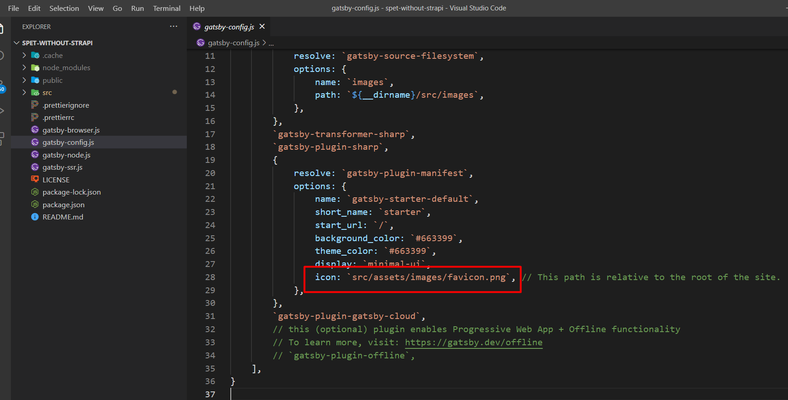
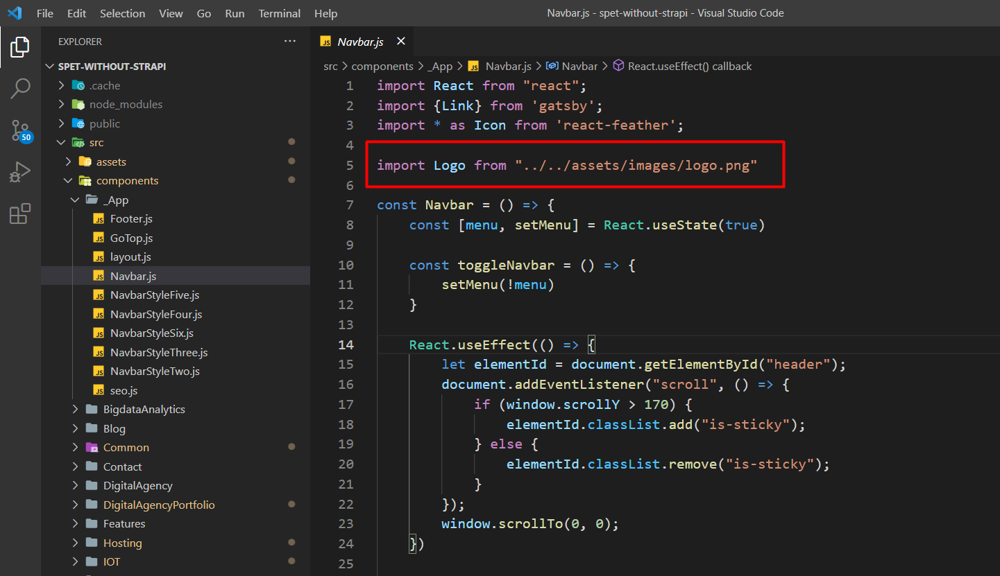
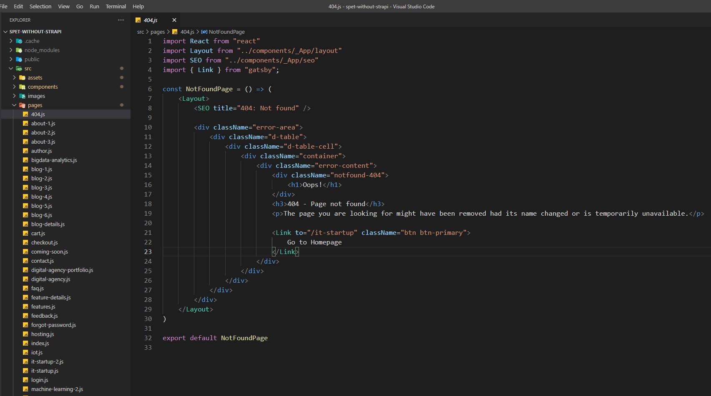
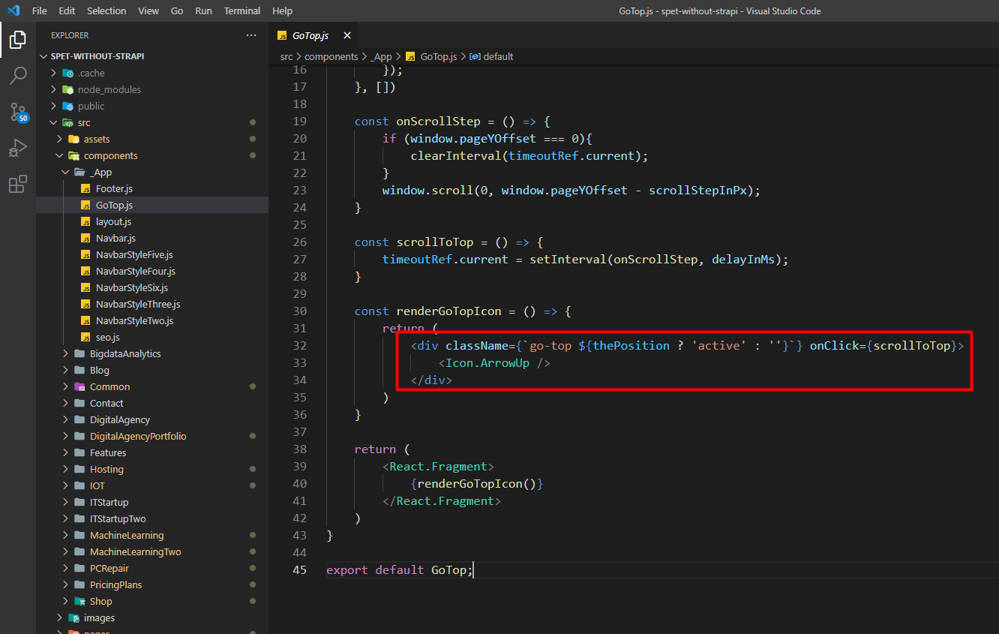
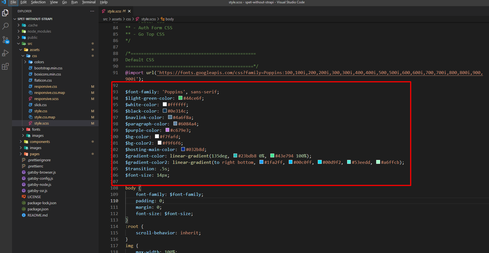

Getting Started
Welcome to Spet react template! We would like to thank you for choosing our template - Spet.
Spet is a React, Next.js, Strapi and Bootstrap 5 based Multipurpose templates. This has been built with React, ES6+ and as framework Next.js! Spet is a creative responsive template purposely designed and built for IT Startups Template.
Setup Development Environment
To kickstart the development of the web app with Spet, at first need to setup the react development environment.
Following tools are needed to setup a react dev environment:
- Node JS
NodeJS works as a node package manager behind the scene. It is recommended to download and install the latest version of Node JS from its official site https://nodejs.org/en/
- Gatsby CLI
The Gatsby command-line tool (CLI) is the main entry point for getting up and running with a Gatsby application and for using functionality including running a development server and building out your Gatsby application for deployment.
The Gatsby CLI (gatsby-cli) is packaged as an executable that can be used globally. The Gatsby CLI is available via npm and should be installed globally by running npm install -g gatsby-cli to use it locally.
- PostgreSQL
Download and install PostgreSQL with PGAdmin.
- Cloudinary
Go to Cloudinary and create an account.
Static version
If you decided to use the Static version of Spet then please jump to 2.
Open the spet-gatsby-static/spet folder and open a terminal/bash/command on that folder and run these commands one by one
- npm install
- npm run develop
- Go to localhost:8000
- Done
For Production Build
Run npm run build to build the project. The build artifacts will be stored in the build / directory. Use the npm run build --prod flag for a production build.
Run : gatsby build
Then Run : gatsby serve
See the official gatsbyjs doc here
Strapi Dynamic Version
- Open the spet-gatsby-strapi/spet-api and update the config/plugin.js file as the cloudinary credentials.
- Open the pgAdmin server & create a database name spet-api and restore the spet-api-data from the downloaded bundle.
- Open the config/database.js and update your PostgreSQL credentials & database name.
- npm install
- npm run develop
- Login by the credential Email: admin@spet.com Password: EnvyTheme1
- Done
Strapi Frontend View
Now open the spet folder which is in that directory like spet-gatsby-strapi/spet and follow like below by opening another command prompt in this folder.
- npm install
- npm run develop
- Done
Pages and Components Info
- Home it startup (/src/pages/it-startup.js)
- Home it startup 2 (/src/pages/it-startup-2.js)
- Home machine learning (/src/pages/machine-learning.js)
- Home machine learning 2 (/src/pages/machine-learning-2.js)
- Home pc repair (/src/pages/pc-repair.js)
- Home hosting (/src/pages/hosting.js)
- Home digital agency (/src/pages/digital-agency.js)
- Home digital agency portfolio (/src/pages/digital-agency-portfolio.js)
- Home bigdata analytics (/src/pages/bigdata-analytics.js)
- Home about-1 (/src/pages/about-1.js)
- and more...
Common Components:
- Footer (src/components/_App/Footer.js)
- GoTop (src/components/_App/GoTop.js)
- layout (src/components/_App/layout.js)
- Navbar (src/components/_App/Navbar.js)
- NavbarStyleFive (src/components/_App/NavbarStyleFive.js)
- NavbarStyleFour (src/components/_App/NavbarStyleFour.js)
- NavbarStyleSix (src/components/_App/NavbarStyleSix.js)
- NavbarStyleThree (src/components/_App/NavbarStyleThree.js)
- NavbarStyleTwo (src/components/_App/NavbarStyleTwo.js)
- seo (src/components/_App/seo.js)
- GoTop (src/components/_App/GoTop.js)
- BlogPost (src/components/Common/BlogPost.js)
- BlogPostStyleThree (src/components/Common/BlogPostStyleThree.js)
- BlogPostStyleTwo (src/components/Common/BlogPostStyleTwo.js)
- Feedback (src/components/Common/Feedback.js)
- and more...
Dependencies
Here are the dependencies list which being used in the Spet React Template:
"dependencies": {
"@loadable/component": "^5.15.2",
"animate.css": "^4.1.1",
"axios": "^0.21.4",
"gatsby": "^4.4.0",
"gatsby-plugin-gatsby-cloud": "^4.4.0",
"gatsby-plugin-html-attributes": "^1.0.5",
"gatsby-plugin-image": "^2.4.0",
"gatsby-plugin-manifest": "^4.4.0",
"gatsby-plugin-offline": "^5.4.0",
"gatsby-plugin-react-helmet": "^5.4.0",
"gatsby-plugin-sharp": "^4.4.0",
"gatsby-source-filesystem": "^4.4.0",
"gatsby-source-strapi": "^0.0.12",
"gatsby-transformer-sharp": "^4.4.0",
"prop-types": "^15.8.0",
"react": "^17.0.2",
"react-accessible-accordion": "^3.3.5",
"react-dom": "^17.0.2",
"react-feather": "^2.0.9",
"react-helmet": "^6.1.0",
"react-markdown": "^5.0.3",
"react-masonry-component": "^6.3.0",
"react-owl-carousel3": "^2.2.5",
"react-slick": "^0.28.1",
"react-tabs": "^3.2.3",
"sass": "^1.45.1"
}
Change the Site Title
Change the Favicon
To change your Site Favicon by following screenshot
Change the Logo
To change your Site logo by following screenshot
404 Page
To change 404 and setting you can change by following this screenshot here.
Back to Top Arrow
To change Back to Top Arrow and setting you can change by following this screenshot here.
Global Color Options
To change global color options file path /public/css/style.scss
Note: After SCSS file run then it will be work
Fonts Used
By default, the template loads Poppins font from Google Web Font Services, you can change the font with the one that suits you best. Google Fonts
You will find the font code in the "style.scss file: src/assets/css/style.scss
@import url('https://fonts.googleapis.com/css?family=Poppins:100,100i,200,200i,300,300i,400,400i,500,500i,600,600i,700,700i,800,800i,900,900i');
$font-family: 'Poppins', sans-serif;
Note: After SCSS file run then it will be work
How to Run The SCSS File
Please open the file Visual Studio Code Editor. And follow the video tutorial.
Here the Link: https://www.youtube.com/watch?v=0MWmv1Gvv5w
24-Hour Turnaround Support:
Quick, Dedicated & Professional Support!
We only provide support through our ticketing system. Please submit your ticket by visiting the EnvyTheme Support System.
For any pre-purchase query, please use live chat on the item demo site also, email, and the item’s comment section on ThemeForest. Thanks!